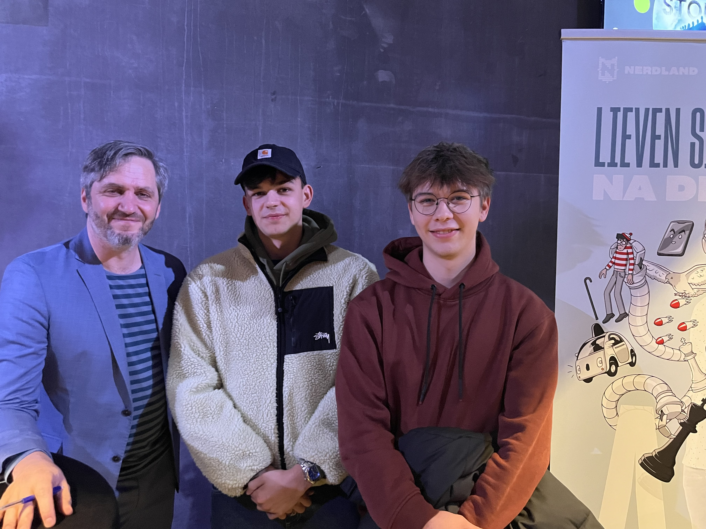
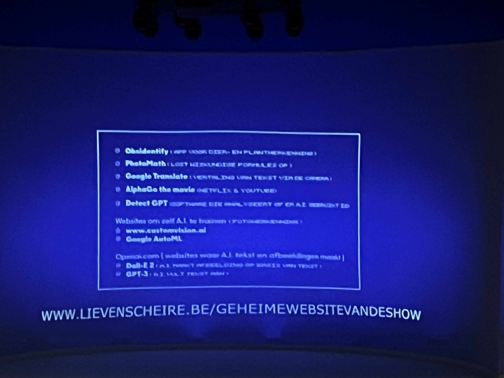

Scouting logbook van seminaries & IT-sessies
Games Played
Total Time
Locations
Main Focus
📍 Corda Campus • 📅 11/03/2025 • ⏱ 3h
We kregen eerst een theoretische introductie over de geschiedenis en werking van Large Language Models, gevolgd door een kennismaking met tools zoals ComfyUI voor beeldgeneratie met modellen zoals Stable Diffusion XL. Daarna gingen we praktisch aan de slag door een workflow na te bouwen van een project waarbij een hond wereldwijd werd gegenereerd, en bekeken we verschillende outputvoorbeelden.
📍 Corda Campus • 📅 01/04/2025 • ⏱ 3h
Tijdens dit seminarie zijn 2 gastsprekers van de politie langsgekomen om te vertellen wat zij voor hun beroep zoal deden binnen de politiesector. Dit ging van theoretische achtergrond tot voorbeelden van praktijksituaties waar zij mee in contact gekomen zijn.
📍 Corda Campus • 📅 29/04/2025 • ⏱ 3h
We kregen eerst een korte introductie over de evolutie van webapplicaties en waarom React zo krachtig is dankzij zijn eenvoud en gebruik van standaard JavaScript-tools. Daarna gingen we praktisch aan de slag met het bouwen van een Pokémon battler, waarbij we stap voor stap React-features leerden en uiteindelijk een volledige applicatie ontwikkelden.
📍 Corda Campus • 📅 06/05/2025 • ⏱ 3h
Tijdens dit seminarie kregen we uitleg van een gast spreker die muziek maakte met behulp van generatieve AI. We begonnen met een inleiding van de generatieve AI die hij gebruikte en gingen zo langzaam over in het gebruik ervan voor muziek te maken.
📍 PXL Hasselt • 📅 14/10/2025 • ⏱ 3h
Tijdens dit seminarie kwam Jackie Janssen ons onder andere zijn nieuwe boek voorstellen. Dit ging net zoals zijn seminarie over ai in de huidige moderne wereld en hoe mensen die buiten de IT-wereld hiermee in contact staan
📍 Corda Campus • 📅 05/11/2025 • ⏱ 3h
Het seminarie gaf een introductie tot quantum computing en het verschil met klassieke computing, waarbij concepten zoals qubits, superpositie en quantum circuits werden uitgelegd, evenals de huidige stand van zaken en toepassingen in verschillende sectoren. Daarnaast werd ingegaan op quantum machine learning en tools zoals Qiskit, waarmee we inzicht kregen in hoe quantum en AI gecombineerd kunnen worden voor toekomstige complexe berekeningen.
📍 PXL Hasselt • 📅 24/11/2025 • ⏱ 3h
Tijdens dit seminarie vertelde Sarah hoe je in de huidige wereld nog steeds goed geld kan verdienen. Ze probeerde jongeren ervan te overtuigen dat het niet zo moeilijk is als dat iedereen het altijd laat lijken en hoe zij het zelf heeft gedaan
📍 Corda Campus • 📅 03/12/2025 • ⏱ 3h
Het seminarie gaf een introductie tot datawarehousing en de rol ervan in business intelligence, inclusief belangrijke concepten zoals ETL/ELT, medallion architecture en het verschil tussen feit- en dimensietabellen. Daarnaast werd Microsoft Fabric toegelicht als end-to-end dataplatform, met een praktijkcase die toonde hoe data en rapportering efficiënter worden georganiseerd en geoptimaliseerd.
📍 Trixxo Arena • 📅 08/11/2024 • ⏱ 2h
Een zaalshow waarin Lieven Scheire verteld over artificiële intelligentie. Hij brengt het op een manier die zowel onervaren mensen als experts aanspreekt.

